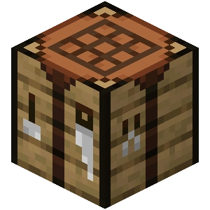

Crafting is just as important as mining. The crafting system allows the player to craft tools, equipment,
armor and more.
It may seem complex at first, but it gets easier the more you craft. If you find yourself having trouble
with crafting, just use the
recipe book located in the crafting table UI. However, it's recommended to play the game without using it,
as it tends to make the game too easy for new players.
Embrace the challenge!!! src="pictures/Crafting_Table_JE4_BE3.webp">
Crafting is just as important as mining. The crafting system allows the player to craft tools, equipment,
armor and more.
It may seem complex at first, but it gets easier the more you craft. If you find yourself having trouble
with crafting, just use the
recipe book located in the crafting table UI. However, it's recommended to play the game without using it,
as it tends to make the game too easy for new players.
Embrace the challenge!!!